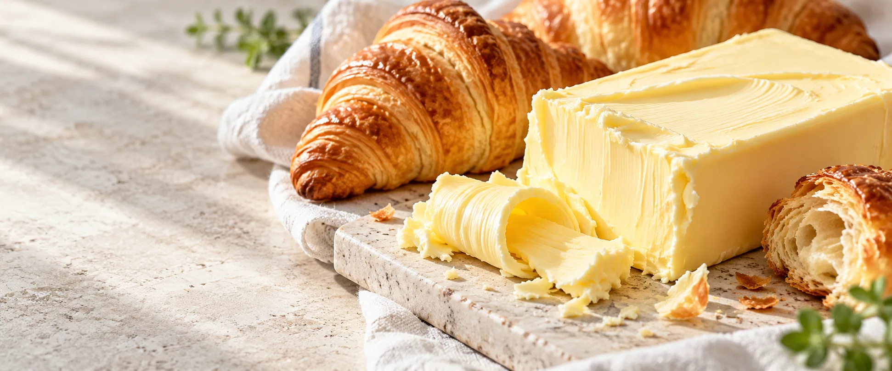
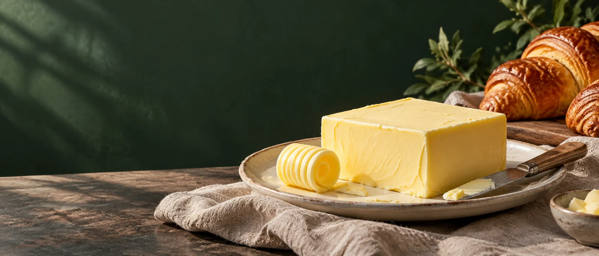

本文用途
这里展示后台文章发布后的阅读形式。正式内容将由管理员按真实公司资料填写；原型中的文字不构成规格、价格或供货承诺。
图片可选
管理员可以上传封面和在正文插入图片，也可以发布只有文字的文章。没有图片时正文直接从标题和摘要开始。

资料中心 · 演示内容
菜单可由后台维护到三级。每一级都拥有独立的文章列表，文章可以有图，也可以只用文字完整呈现。
企业影像 · 设计占位
管理员在后台上传 MP4。页面打开时不创建视频播放器，也不会请求视频文件；访客点播放后才加载。下方是三秒设计样片，并非真实公司宣传片。

本级文章 · 演示内容
设计演示文章 · 非真实产品资料
这里展示后台文章发布后的阅读形式。正式内容将由管理员按真实公司资料填写；原型中的文字不构成规格、价格或供货承诺。
管理员可以上传封面和在正文插入图片，也可以发布只有文字的文章。没有图片时正文直接从标题和摘要开始。